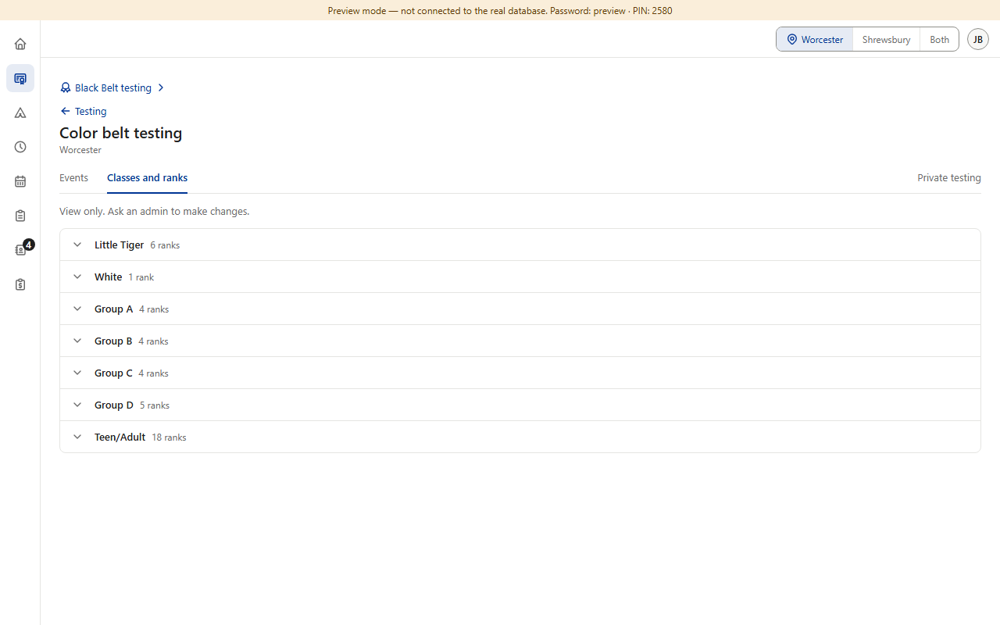
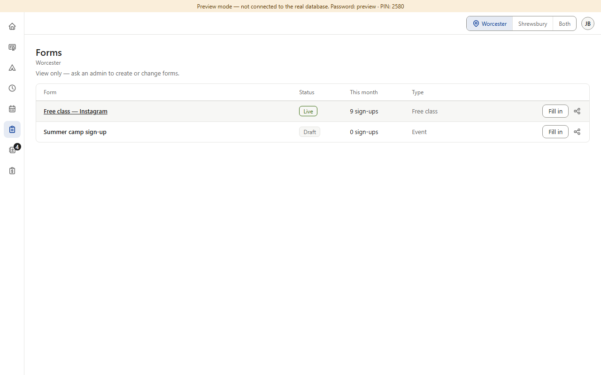
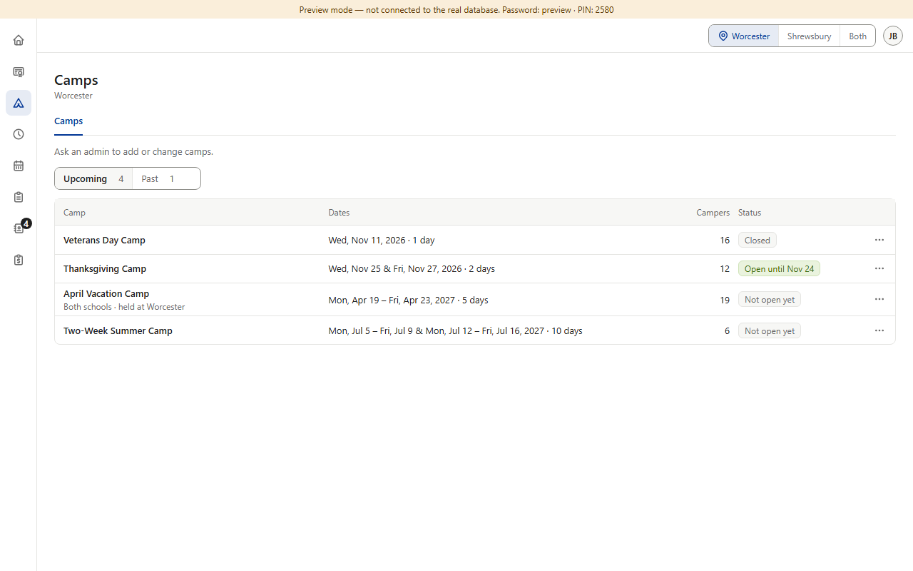
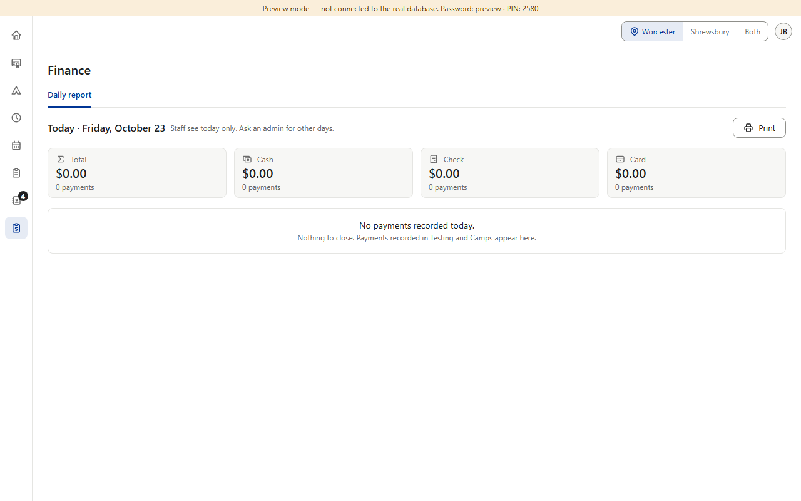
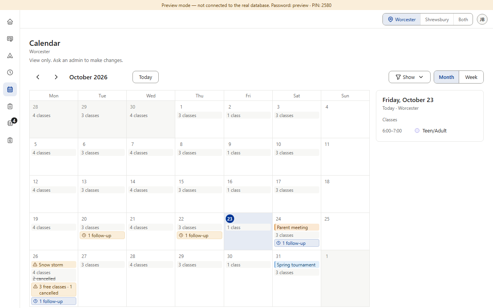
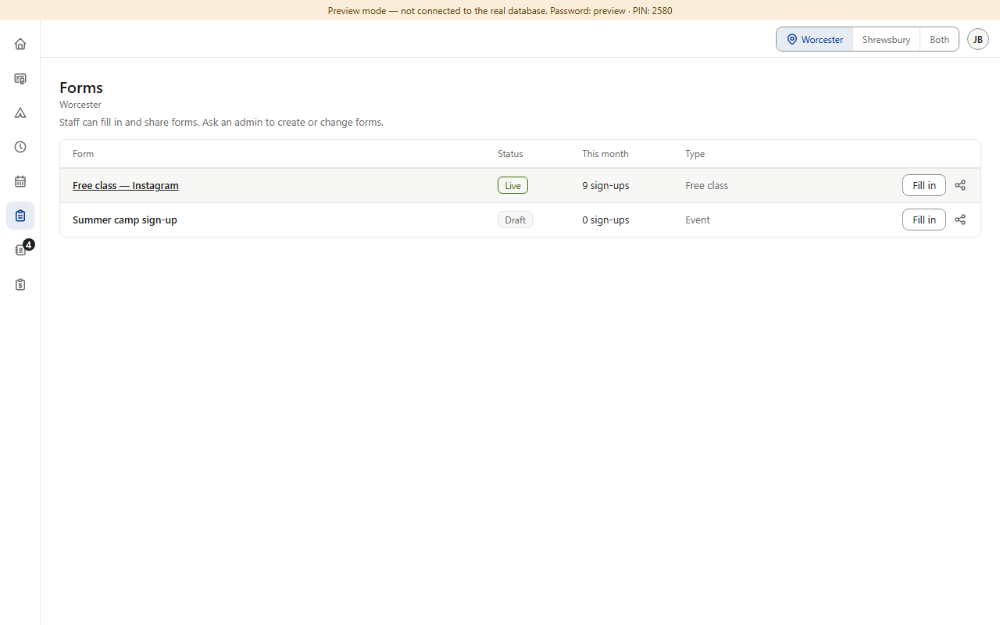

Approved in each section, plus drift. Pages staff can't change show a gray line. Most say “View only. Ask an admin to make changes.” (Color Belt, Star and Black Belt settings, Schedule). Calendar and Forms use a dash and a small “ask”, and Forms says “View only” although staff can fill in and share forms there. Pages staff can partly use already name what's left for an admin (Camps, Finance, the testing lists). Schedule's mockup drew the dash; its code already uses the full stop (drift). (Preview screenshots at PC size, signed in as staff · fake data)





